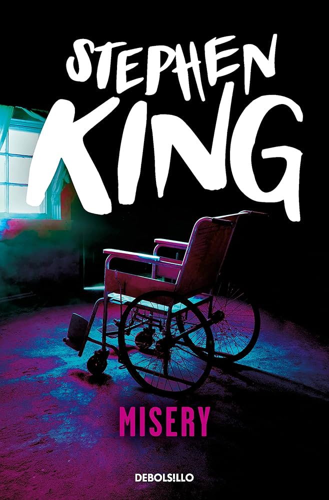
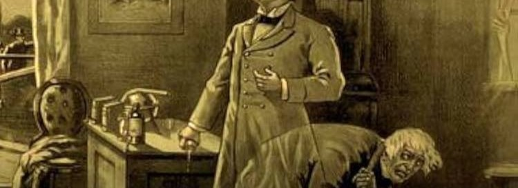

PSYCHOLOGICAL
El terror psicológico se centra en la explotación de los miedos y obsesiones del subconsciente. Es uno de los subgéneros más populares del cine y la literatura.
Cine: Black Swan
Una bailarina cae en una espiral de obsesión, paranoia y pérdida de la realidad mientras busca la perfección artística.
Cine: Get Out
Un joven descubre una inquietante verdad cuando visita a la familia de su novia en una aparente reunión cordial.
Cine: The Babadook
Una madre y su hijo son atormentados por una presencia oscura surgida de un misterioso libro infantil.
Cine: Goodnight Mommy
Dos hermanos comienzan a sospechar que la mujer que regresó a casa tras una cirugía no es realmente su madre.
Libro: La paciente silenciosa
Un psicoterapeuta intenta descubrir por qué una mujer dejó de hablar después de asesinar a su esposo.
Libro: El psicoanalista
Un reconocido psiquiatra recibe una amenaza que lo obliga a descubrir quién busca destruir su vida.

Libro: Misery
Un escritor queda atrapado en la casa de una admiradora obsesiva tras sufrir un accidente.

Libro: El extraño caso del doctor Jekyll y el señor Hyde
Un científico descubre una forma de separar los aspectos más oscuros de su personalidad, con consecuencias aterradoras.